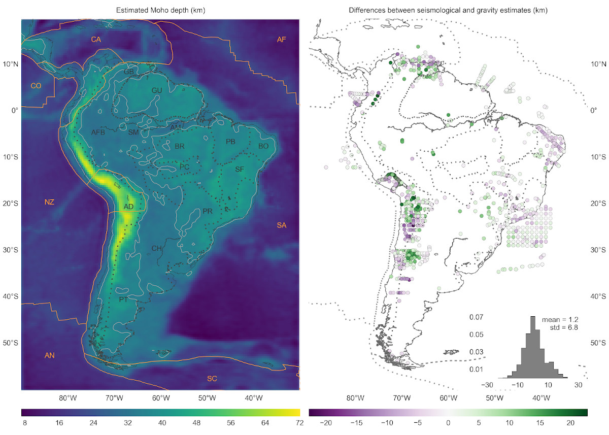

Uieda, L., and V. C. F. Barbosa (2017), Fast nonlinear gravity inversion in spherical coordinates with application to the South American Moho, Geophys. J. Int., 208(1), 162-176, doi:10.1093/gji/ggw390.
This paper describes a new gravity inversion method to estimate the depth of the crust-mantle interface (the Moho). The inversion uses a spherical Earth approximation by discretizing the Earth into tesseroids (spherical prisms). The forward modeling method used is described in the paper Tesseroids: forward modeling gravitational fields in spherical coordinates. We applied the inversion to estimate the Moho depth for South America.
The main result from this publication is the gravity-derived Moho depth model for South America and the differences between it and seismological estimates of Assumpção et al. (2013). These differences allow us to know where the gravity-derived model can be trusted and where there might be unaccounted sources in the gravity data.
You can download the model results, source code, and input data from doi:10.6084/m9.figshare.3987267

Figure caption: Dotted lines represent the boundaries between major geologic provinces. AD: Andean Province, AFB: Andean foreland basins, AM: Amazonas Basin, BR: Brazilian Shield, BO: Borborema province, CH: Chaco Basin, GB: Guyana Basin, GU: Guyana Shield, PB: Parnaíba Basin, PC: Parecis Basin, PR: Paraná Basin, PT: Patagonia province, SF: São Francisco Craton, SM: Solimões Basin. Solid orange lines mark the limits of the main lithospheric plates. AF: Africa Plate, AN: Antarctica Plate, CA: Caribbean Plate, CO: Cocos Plate, SA: South America Plate, SC: Scotia Plate, NZ: Nazca Plate. The solid light grey line is the 35 km Moho depth contour.
You'll find the source code, input data, and instructions to produce the results from the paper on the Github repository. There should be enough information for you to produce all figures of the paper.
You can run the Jupyter notebooks online without installing anything
thanks to the awesome free Binder web service.
Follow the link below and open any notebook in the code folder. Beware that
the CRUST1.0 synthetic and the South American Moho results will take hours or
days to run.
mybinder.org/repo/pinga-lab/paper-moho-inversion-tesseroids
Estimating the relief of the Moho from gravity data is a computationally intensive non-linear inverse problem. What is more, the modeling must take the Earths curvature into account when the study area is of regional scale or greater. We present a regularized non-linear gravity inversion method that has a low computational footprint and employs a spherical Earth approximation. To achieve this, we combine the highly efficient Bott's method with smoothness regularization and a discretization of the anomalous Moho into tesseroids (spherical prisms). The computational efficiency of our method is attained by harnessing the fact that all matrices involved are sparse. The inversion results are controlled by three hyper-parameters: the regularization parameter, the anomalous Moho density-contrast, and the reference Moho depth. We estimate the regularization parameter using the method of hold-out cross-validation. Additionally, we estimate the density-contrast and the reference depth using knowledge of the Moho depth at certain points. We apply the proposed method to estimate the Moho depth for the South American continent using satellite gravity data and seismological data. The final Moho model is in accordance with previous gravity-derived models and seismological data. The misfit to the gravity and seismological data is worse in the Andes and best in oceanic areas, central Brazil and Patagonia, and along the Atlantic coast. Similarly to previous results, the model suggests a thinner crust of 30-35 km under the Andean foreland basins. Discrepancies with the seismological data are greatest in the Guyana Shield, the central Solimões and Amazonas Basins, the Paraná Basin, and the Borborema province. These differences suggest the existence of crustal or mantle density anomalies that were unaccounted for during gravity data processing.